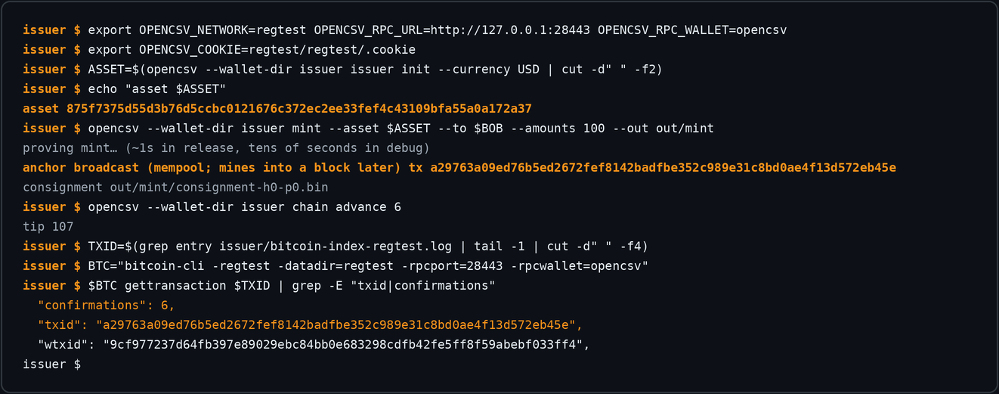
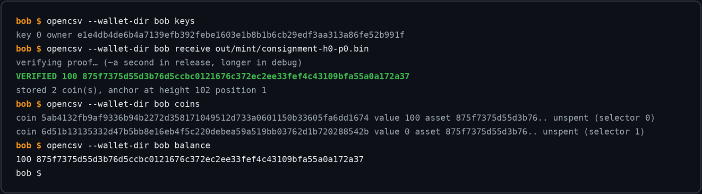

2026-07-31
Inception: client-side verified stablecoins on Bitcoin L1
Starting point: Shielded CSV
(Nick–Eagen–Linus). Day-one decisions: anchor to Bitcoin L1 directly (no fork),
shielded amounts with public assets and issuers (auditable supply over shielded
transfers), and no zkVM — hand-written AIR with in-circuit recursion.
First artifacts: the paper and this site.
2026-07-31
Recursive PCD works: constant proofs over arbitrary history
The transfer circuit verifies two predecessor proofs in-circuit — mint →
transfer → transfer — so proof size and verify time are constant in coin
history. Later measured: 56,041 bytes, ~3.6 ms verify, identical at hops 1
and 2. See BENCHMARKS.md.
2026-07-31
Formal verification from the start
Lean 4: inflation soundness, conservation, nullifier uniqueness, receiver
correctness — sorry-free, every assumption a labeled axiom. Later enforced by
CI axiom gating:
the assumption set can't grow silently.
2026-07-31
Proving is single-thread-bound
Core-scaling: 1 core ≈ 4 = 8 = 64 cores at ~3 s per transfer. Single-core
speed is all that matters — which unexpectedly makes phones interesting.
2026-08-01
Phones beat the server 3–5×
On-device benchmarks (opencsv-rs#1):
iPhone 16e and 17 Pro Max prove a recursive transfer in ~0.55–0.96 s vs 2.97 s
on the 64-core Xeon. Mobile proving is viable.
2026-08-01
Payments over production Signal, both directions
Physical iPhone: consignment as an E2E Signal attachment →
+100 USD · verified rendered natively; the phone proves a 2-in/2-out
transfer (~1 s) → CLI verifies. Audits agree on both sides.
(issue,
PR #2)
CLI side, regenerated weekly by CI from real regtest runs:


2026-08-01
Discovery: copy-griefing discovery
A raw anchor record is just bytes: a mempool spy can copy it into their own
transaction and front-run it — the copy wins the first-occurrence race and the
victim's coins freeze. Burn, not theft. Three redesign rounds begin.
2026-08-01
Failure: the sidecar binding failure
First fix: publish (nf, B = H(nf, ctx)) and check it publicly.
Broken on arrival — both inputs are on-chain, so the griefer recomputes B under
their own context. Caught by the implementing agent, not shipped. The lesson
that shaped everything after: public matchability and copy-forgeability are
the same property.
2026-08-01
The bound-payload fix
The payload IS the bound value: P = H("bind" ∥ nf ∥ ctx), and
the raw nullifier never goes on-chain. Copying fails (wrong ctx); recomputing
needs nf (preimage). Later mechanized in Lean in both directions
(griefer_copy_invisible, no_occurrence_without_knowledge).
2026-08-01
Real Bitcoin: regtest e2e and a live signet anchor
The demo chain dies: real transactions on regtest end-to-end, then a 100-USD
mint confirmed on Mutinynet signet (tx
3282c8ab…,
height 3308725), verified by a fresh wallet from scanned blocks. Two backends
converge on one ctx derivation after a near dialect split.
2026-08-01
Discovery: BIP158 filters exclude OP_RETURN discovery
Verified against live bitcoind: basic compact filters omit OP_RETURN outputs
entirely — anchor records are never filter-matchable. The compact-filter plan
dies on contact; SPV (headers + merkle + one block) takes the point check.
2026-08-01
u64 limb soundness becomes a theorem
The conservation gadget's carry argument — the most failure-sensitive informal claim in
the codebase — is mechanized
(b036cf3).
Bonus honest finding: the general converse is false (a completeness limitation,
not a soundness hole) — documented, not lurking. The living
formal page now carries 17 theorems, regenerated
weekly from the build.
2026-08-01
Indexing evolves four times in a day
Anchor-server (demoted) → full node → N-of-M cross-check → finally
scan-first indexing, which made filters useful again: anchors add a
constant marker output (546 sats to OP_0 ∥ sha256(OP_TRUE),
quantum-clean). Filters include it, so phones find anchor blocks trustlessly
at ~KB/block while the record stays ctx-bound. Exclusion becomes a local check;
indexers become optional, spot-verifiable accelerators. Paper §4.7.1 rewritten
the same day.
2026-08-01
The scan soundness formal package
The formal layer follows deployment: no-false-negatives of filter discovery
(trustless absence is provable — and it fell out of the construction in one
line), scan-exclusion soundness (scan-first ≡ full-block scanning), marker
zero-authority, accelerator fraud-provability. 23 theorems, no new axioms
(00edaed).
The N-of-M honesty hypothesis is eliminated from the roadmap — the
architecture got better, so the assumptions got fewer.
2026-08-01
The marker ships; scan-only verification proven
The marker output lands in anchor transactions
(5564502,
verified against real BIP158 filters), the ScanIndex engine follows
(cd37a53),
and the scan FFI completes the stack
(5a21db1):
a real mint consignment verified through the C ABI with no RPC and no
indexer — VERIFIED from the scan alone, double-spend rejected
against the same index. Bandwidth for the test window: 320 filter bytes +
1,140 block bytes.
2026-08-01
Scan-first runs in the app — proven by a stranger's anchor
The iOS provider swap lands on opencsv-wallet
(1fa76d6944):
decision ladder (self-scan → cross-check → demo, throwing rather than
falling back on an unsynced index), scheduled background sync, the
"fully verified by this phone" badge. The interop proof: an anchor
hand-crafted with raw bitcoin-cli from the spec — 64-byte OP_RETURN at
vout 0, 546 sats to OP_0 ∥ sha256(OP_TRUE) at vout 1 — was
discovered by the scan engine purely via the filter walk, under 5 KB across
a 113-block chain. Two implementations, one protocol, zero coordination.
2026-08-02
Verify-then-adopt becomes real
The pure opencsv-kernel
(b64bdf4)
carves binding, occurrence, first-occurrence, and supply logic into an
Aeneas-compatible Rust surface. The separate
formal-aeneas
project proves translated Rust equal to the Lean specification. The public
record now keeps 29 specification theorems and 15 translated-Rust audit
declarations as separate ledgers, not one inflated count.
2026-08-02
The mempool sentinel: one symptom, three lookups discovery
Fresh mints verified everywhere except the phone's credit path. The fix
(1616397)
could not live only in locate(): the accept driver asks
anchor_at and ctx_at first. One shared lookup now
resolves mempool sentinels and treats chain lag as retryable, not final.
2026-08-02
Serverless crediting closes the receive loop
opencsv_scan_export_snapshot
(290c8e0)
projects the phone's compact-filter scan into the snapshot consumed by the
crediting verifier. A real consignment was verified and credited with
no RPC, no indexer, and no anchor server. Public explorers become
hints; they do not decide acceptance.
2026-08-02
A proof that only builds on one laptop is not a receipt failure
The first Aeneas project used an absolute local dependency path and
audited only part of its surface. The reproducibility branch pins the Lean
dependency by exact Git revision, removes a duplicate theorem, expands the
audit to 15 translated-Rust declarations, and passes hosted CI
(run 30765043746).
The exact green commit was later fast-forwarded to
formal-aeneas/main@3bcafed
without a merge commit or history rewrite.
2026-08-02
Field sync and batching v1 each find a real bug discovery
Signet sync failed at height 2016 because the client applied the wrong
difficulty rule; e137096
syncs 315,800 headers through 156 retargets. Batching v1 then proved that
bare OP_TRUE fails CLEANSTACK when envelope items remain;
3d4da5f
fixed the script. V1 remains prototype evidence, not the new-write format.
2026-08-02
Batching becomes co-funded and signer-verifiable
A signed stock input fixes the shared context. Each participant contributes
one payload, one fee input, and one change output; every signer reconstructs
the canonical transaction and releases only SIGHASH_ALL. C0/C1/C2
land as d51d139,
0af0258,
and 54c0833.
The 64-participant reference cap is a script-safety profile, not a universal
relay quota.
2026-08-02
The project domain gets a real front door
The GitHub Pages project site originally kept its homepage under
web/ and used a root meta-refresh. The
opencsv.net cutover makes the repository root canonical:
assets stay grouped under web/, while the old
web/index.html becomes a compatibility redirect. Ordering is
part of the design: domain ownership and DNS must verify before the Pages
custom-domain flip, so the working github.io site never
redirects into an unresolved hostname.
2026-08-03
Production proofs replace the beautiful prototype numbers discovery
The ~56 KB / ~3.6 ms / ~0.55 s-phone profile proved recursive PCD and
mobile feasibility, but used two FRI queries and no grinding. D1 → D4 → D3
→ D2 lands setup caching, hard-bound predecessor keys, in-circuit issuer
authorization, and the frozen v3 boundary. The honest production receipt:
a 94-bit enforced floor, ~0.54–0.85 MB proofs, 15–22 ms desktop verification,
and 11.25–14.47 s transfer proving on the iPhone 16e. Two higher-memory
profiles died under the iOS process limit before the final packing fit.
2026-08-03
A live child spends the marker and changes the protocol failure
The original P2WSH(sha256(OP_TRUE)) marker was filter-visible
and anyone-can-spend. On signet, a third party immediately spent its 546
sats and pinned the parent against ordinary RBF. New anchors use unspendable
P2WSH(sha256(OP_RETURN)); historical v2 remains readable but
cannot enter a new replacement epoch. A generic Core fee bump then removed
protocol change, justifying a pure change-only replacement validator.
Full receipt.
2026-08-03
Adversarial review attacks the batching fix itself discovery
Typed verified-input capabilities, stock/fee-key body authorization,
semantic quotas, durable signature release, and exact-manifest recovery
replace Boolean assertions and newest-epoch-only state
(8d047f6).
A second attack pass found historical-v2 live admission and a slow-drip
timeout. Tip e4265b9
closes both. Hosted CI and independent re-review remain merge gates.
2026-08-03
A Lean build can be green while the modeled rule is wrong failure
The first C3 batching-v2 model built and matched its axiom baseline, but
ConformingReplacement did not require either endpoint manifest
to be valid. It therefore admitted marker and conservation mutations. The
corrective a831b13
requires valid endpoints and proves marker preservation. Final C1
reconciliation then added duplicate operation/payload/change-script
rejection, reusable stock/change floors, and nonzero proposal guards in
c4f970d.
Exact hosted CI passed, the checked audit expanded to 54 declarations, and
PR #2
records the fast-forward to opencsv-formal/main.
2026-08-03
Signal owns the fee wallet; Bitcoin is gas only
The anchor-server architecture is superseded. Rust owns the OpenCSV
wallet, BIP84 fee wallet, UTXO reservation, change, context, signing,
operation journal, safe RBF, and direct relay. Esplora accelerates reads;
headers, BIP158, merkle proofs, and full blocks decide spend state. The FFI
exposes no WIF, caller-selected input/change, arbitrary BTC recipient,
general raw broadcast, or bespoke OpenCSV server.
2026-08-03
The phone restore that cloned a primary failure
iOS restored Keychain state onto the developer iPhone 16e, proving an
account root could silently arm two primaries. Rust now binds the database
and backup checkpoint to a separate non-migratable ThisDeviceOnly
value. Missing/mismatched restores are read/export-only, and missing state
is sticky: a later replacement cannot re-arm the wallet
(fb4a26a).
2026-08-03
One consignment, one verdict, one bubble discovery
Delivery attempts are not payment identities. The Rust receive boundary
decodes, canonically re-encodes, verifies/stores canonical bytes, and returns
one SHA-256 identity for accepted and rejected verdicts
(4dc05cf).
Swift still owes the physical crash/resume receipt: two attachment attempts,
exactly one rendered payment.
2026-08-03
A merged Rust foundation is still not an iOS wallet
After exact hosted candidate CI succeeded, the owner deferred the
outstanding independent adversarial re-review and authorized strict
fast-forwards: integration e4265b9, then wallet
4dc05cf, are now on opencsv-rs/main. The review is
deferred, not represented as completed; later findings must be fixed
forward. Signal-iOS, the linked iPhone, releases, and mainnet remain
untouched, and physical migration/crash/retry/RBF evidence is still owed.
2026-08-04
“USD” was a label, not a product definition failure
The first Signal mint form accepted a ticker and amount, so typing USD
could create an unrelated asset without recognizable issuer, terms,
precision, backing, or redemption. A first correction froze one test-only
Preview definition and removed custom input. It produced clean local build
receipts, but it was only an intermediate design.
2026-08-04
One USD wallet; exact issuers; no minting in Signal discovery
The fixed per-wallet Preview was still wrong: deriving an issuer inside
every Signal account created a different asset_id per account
and placed supply authority in the consumer wallet. The corrected production
boundary is owner-only. Rust accepts reviewed public issuer manifests but
retains no issuer secret and exposes no mint C ABI. Signal aggregates exact
trusted instruments beneath one USD product, names the chosen issuer at
review, records its asset identity in the receipt, and rejects a send that
would need to mix issuers. OpenCSV and any future Tether instrument remain
separate claims; no Tether identity is invented and the registry remains
empty until a real manifest is approved.
Draft receipts: Rust owner-only boundary
11ba73ca,
issuer-tool CI gate
e505b181,
and Signal
645f12574d;
27 Rust account-wallet tests, focused issuer-selection/amount tests, and the
complete unsigned Signal simulator build pass locally. Hosted approval,
issuer activation, physical-device acceptance, merge, and mainnet remain
open.
The first hosted run caught the privileged signet issuer example being
compiled against the correctly owner-only default library. The correction
makes issuer state and methods an explicit issuer-tools feature,
requires it for that example, and gives the harness its own CI compile
check. Default/CocoaPods builds remain owner-only. Exact local warning-denied
workspace and feature checks pass. Both hosted CI runs for
e505b181 subsequently passed; that validates the owner-only
default and featured acceptance harness, not an issuer activation or
merge.
2026-08-04
Issuance moved to a headless operator boundary
Removing mint from Signal did not remove OpenCSV issuance. Commit
7882e185
adds an opencsv-issuer binary behind the non-default
issuer-tools feature. Signal's C ABI and CocoaPods graph remain
owner-only.
The JSON operator reads independently generated issuer root and device
binding secrets from owner-only files. It creates exact manifests, prepares
mints only by asset id, requires exact checkpoint acknowledgements, and
exposes durable broadcast, resume, cancel, and protocol-safe fee bump.
Running the open-source binary cannot mint another issuer's asset without
its committed seed, and a USD ticker lookalike is not admitted to Signal's
reviewed registry. No Tether authority or manifest is claimed.
Four CLI tests, an exact-checkpoint regression, and focused
warnings-denied/Clippy checks pass locally. Hosted CI for this exact tip is
pending; Signal source, the iPhone, issuer activation, merge, release, and
mainnet were untouched.
2026-08-04
Unsigned was not an in-place Signal upgrade failure
A simulator build made with CODE_SIGNING_ALLOWED=NO lacked
Signal's effective application-group entitlement. Launch failed closed,
and CoreSimulator replaced the simulator-only app/group containers. The
provisional registration and wallet could not be recovered. Source, the
physical iPhone, issuer checkpoint, and mainnet state were untouched.
The accepted procedure now requires Xcode's default local ad-hoc
signature, inspection of app-group and keychain entitlements, and container
identity receipts before and after install. The signed build passed; a fresh
registration was completed without another reinstall. The exact runbook is
ab0b20f.
2026-08-04
First exact reviewed issuer enabled on signet live test
Signal commit
4fec89e902
pins one test-only OpenCSV USD Preview manifest on signet. Mainnet
and regtest registries remain empty. Its asset id is
1d58a8145eedac17efe66371293eb472a4c68554141cc14380360e6eb720b507;
the public terms record six decimals,
the exact issuer key and terms hash, no backing, no redemption, no monetary
value, and no Tether claim.
A live registered simulator recognizes the one-USD policy at zero balance
and has 20,000 confirmed signet sats restricted to protocol fees. Its public
owner is
ff17c90b2e7c511f8d64734e07833502d6a82308d0c5ba0ca862f61ebd48c124.
The headless issuer's first preparation rejected safely before proving: its
1,000-sat confirmed UTXO was below the 2,500-sat policy floor. A 10,000-sat
faucet output is observed but unconfirmed. No USD operation exists yet;
confirmation, checkpoint acknowledgement, broadcast, Signal delivery,
credit, crash-resume, and safe RBF remain open.
2026-08-04
Live issuance found a checkpoint self-reference before signing failure
The first funded preparation used the debug prover and took about 13
minutes. Its proof was valid, but persisting the checkpoint hash inside the
operation and receipt changed the checkpoint that had just been hashed.
The operation was cancelled before signing or broadcast, its fee outpoint
was released, and the mismatching export was retained only as private
forensic evidence.
Commit
1ef29d2
excludes acknowledgement metadata and the receipt's derived hash from the
canonical checkpoint, stores the final receipt before hashing, and
independently recomputes current state at acknowledgement. The exact export
now remains stable across acknowledgement, while a later state change makes
that old hash fail. Twenty-nine warnings-denied account-wallet tests and
four issuer-CLI tests pass.
2026-08-04
First headless USD consignment crossed live Signal live test
The corrected release preparation minted 100 test-only preview USD to
simulator owner ff17c90…8c124 under exact checkpoint
77f94dc96d1610da4c7775a86fbbcb576ff0b72edadcf9346a04e75c06f524ef.
Rust persisted the signed transaction before submitting it to both
configured signet peers. Transaction
eb5571a6…1c22c
uses 455 sats at 2 sat/vB, with record, marker, and change at vouts 0, 1,
and 2. The canonical 536,508-byte consignment id is
16d16cde8b9fda972bf5b56abda706399907d4259987251a1d1ddd09f36fdd68.
Signal delivered and the freshly registered simulator downloaded that
one 537 KB attachment. Its anchor is still in the signet mempool, so the
wallet correctly remains at 0 USD. This is a transport and
pre-confirmation fail-closed receipt, not a completed payment acceptance
claim. Confirmation-depth credit, crash/resume, RBF, and physical-iPhone
acceptance remain open.
2026-08-04
A fee bump needs one tracked writer failure + receipt
The first attempt to continue the live fee bump lost terminal ownership
and briefly left two local processes competing to resume the same operation.
Both were terminated before either changed the database; an audit still
showed the original transaction and operation state. The accepted procedure
now permits exactly one tracked writer session for a live operation.
One clean retry replaced eb5571a6…1c22c with signet
transaction
2cac7c02…a762c
at 5 sat/vB. The replacement adds 683 sats of fee and reduces only change
to 8,316 sats. Funding input zero, record vout 0, marker vout 1, change vout
2, protocol context, and proof semantics remain unchanged. This entry
originally also said the consignment id remained unchanged; that was wrong
because its anchor reference names the exact transaction id. One configured
peer accepted it directly; the other timed out. The new owner-only recovery
checkpoint hashes to 5b02915a…f3ac1 and was acknowledged
exactly. It then confirmed at signet height 316228. Signal requires six
confirmations, so at tip 316229 the simulator correctly remained at 0 USD;
four more blocks are required before credit is expected.
15f0ac2
adds backup export --output: create-new 0600 files, durable file
and directory sync, partial-write cleanup, no overwrite, and a small receipt
instead of terminal-printing a multi-megabyte secret checkpoint. Five
focused issuer-CLI tests pass with warnings denied.
2026-08-04
Pending is visible, but not owned or spendable correction + boundary
The confirmed replacement exposed the exact failure: a consignment's
anchor reference commits to its transaction id. The attachment already in
Signal named eb5571a6…1c22c, while the chain contained
2cac7c02…a762c. AnchorNotFound was correct.
Preserving input zero, the record, marker, context, output positions, and
proof semantics does not preserve exact-txid consignment bytes.
Rust
53876eb1d7
atomically invalidates stale delivery bytes, persists the signed replacement,
and regenerates canonical bytes only after observing the replacement.
Signal
835ec46f34
pins that source and models incoming activity as
confirming → available or needs attention. Pending
and failed entries carry no amount, verdict, replay credit, or spendability;
only full acceptance credits the Rust wallet. One replaceable notification
advances with the state. Thirty Rust account tests, 20 focused Signal wallet
tests, and the signed simulator build pass. Live replacement delivery and
credit remain open.
2026-08-04
Verified unconfirmed is spendable; transport pending still is not correction + boundary
The earlier boundary used “pending” for two different facts. A downloaded
attachment is only transport and earns no amount, coin, or spendability. An
exact unconfirmed Bitcoin transaction can carry stronger evidence. Rust
eee48878ee
adds a separate provisional capability instead of weakening ordinary
verification; follow-up
420338280f
removes a disappeared parent's coins from the already-open wallet
immediately.
Only the phone-owned self-scan path can use it. The confirmed scan remains
the exclusion prefix; generic Esplora supplies the exact mempool transaction
as a non-authoritative accelerator. Rust independently verifies proof,
ownership, binding, txid, funding context, RBF, and canonical
record/marker/change layout. Mempool entries never enter confirmed ordering
or first-occurrence audit logic. Cross-check and single-snapshot paths remain
confirmation-gated.
Parent txids persist in the operation journal, pending export, and Secure
Backup checkpoint and are re-observed after selection and immediately before
signing. Missing or changed parents freeze provenance. Signal
7993fefb38
exposes
confirming → available-unconfirmed → settled, replacement-risk
copy, promotion notifications, and needs-attention recovery. Thirty-four
serialized Rust FFI tests and 71 Signal tests in 14 suites pass on a
disposable iPhone 16e simulator. Debug feature-on tests and a Testable
Release feature-off app build both pass with app-target warnings as errors. A live
two-hop signet receipt, replacement/freeze exercise, crash recovery, and
refreshed film remain open; no evidence simulator or physical phone was
modified.
2026-08-04
The registered evidence simulator was not an install target failure
After the green tests and build, a manual simctl install was
run against the registered evidence simulator. Its ordinary app-container
UUID changed and Signal returned to onboarding. Application-group database
files remain, but the old registration/keychain state is not usable, so this
is not called a preserved or recovered install. The physical iPhone, private
issuer state, and mainnet were untouched.
The rule is now strict: compile and test on a disposable simulator clone;
never install a test host or manual app over the evidence simulator. A future
evidence upgrade requires recorded app/app-group/keychain identity and a
recoverable clone first. Re-registration remains owner work.
2026-08-04
The website shows the real Signal simulator evidence
A new 40-second composition combines a real registered-simulator screen
recording with Remotion framing. Six full-resolution captures separately
preserve the Signal consignment, shallow-confirmation rejection, 0-USD wallet,
public receive key, restricted Bitcoin fee reserve, and exact reviewed
issuer. The wallet screens and values are real; animation supplies labels
only. Confirmed-balance and send-review frames remain absent until the
replacement anchor reaches the required depth and the app credits it.
2026-08-04
A fresh Signal wallet accepted the exact unconfirmed parent live receipt
The first newly registered Carol simulator exposed three cold-start
problems hidden by warm caches: account and receiver paths disagreed about
the effective peer policy, a newly accepted message request could wait
behind the first scan, and signet bootstrapped from height 1 despite the
reviewed issuer's much later birth. Signal commit
bac3042202 uses one effective policy everywhere, re-enqueues
downloadable attachments before the slow scan, and applies reviewed signet
birth height 316000 while preserving explicit user overrides.
The cold phone-owned scan reached tip 316259 in 232675 ms after reading
1,653,466 filter bytes and 3,727,569 matched-block bytes. It accepted the
exact still-unconfirmed mint anchor 8c3a39aa…8943. Two
deliveries of the same 536,279-byte attachment produced one canonical
consignment id and one live Rust database row with
unconfirmed finality. The focused gate passed 73 tests in 15
suites. This is a receive and replay-deduplication receipt, not a child-spend
receipt; crash/resume, fee bump, final captures, and film remain open.
2026-08-05
Performance claims now come from the transaction correction + receipt
The paper repeated an attractive but false shortcut: dividing Bitcoin
block space by a 64-byte record and calling the result transaction
throughput. A real anchor includes inputs, outputs, witness, discovery
marker, and transaction overhead. The pinned Rust model bounds a solo
anchor at 911 WU and an N-participant batch at
968 + 423N WU. Under an explicitly idealized 4,000,000-WU block
every 600 seconds, that is 7.32 solo operations/s and 15.15 operations/s at
64 participants—not roughly 100.
At 5 sat/vB the model charges 107,904 sats for 64 solo anchors and 35,596
sats for one 64-party batch, a 67% reduction. The new
performance explainer, versioned JSON receipt,
paper v0.3, and CI verification script use the same formulas pinned to
opencsv-rs@4dc05cfd. They also explain that provisional OpenCSV
children consume off-chain asset coins with separate Bitcoin fee UTXOs;
parent risk is enforced by the wallet dependency graph, not hidden behind a
claim of instant finality.
2026-08-05
One received coin no longer needs a fake second input measured draft
The first recursive transfer shape always paid for two predecessor
verifiers. Proof lineage v4 adds a distinct one-input/two-output path: one
authenticated predecessor, one real nullifier, a zero unused nullifier, and
exact recipient-plus-change conservation. A relabeled v3 envelope fails
closed. On the physical iPhone 16e, exact source
b0bc324432c5 proved this path in 6.4353 seconds, verified in
19.75 ms, and emitted 788,047 bytes at a 96-bit adjusted floor. The receipt
is published on draft PR #8;
hosted exact-tip CI and a live Signal signet spend remain open.
2026-08-05
A valid framework is not an entitlement-correct Signal upgrade failed deployment
The first source-built simulator install omitted Signal's application-group
entitlements. CoreSimulator assigned new empty group containers, so Bob and
Carol could not launch with their prior account databases. The corrected app
now carries the Signal group and keychain entitlements, but acceptance is
paused until the 14:05 local APFS snapshot is mounted read-only and both
simulator databases are copied, verified, and restored. No physical phone,
mainnet state, release, or completed payment receipt is implicated.
2026-08-05
The v4 wallet shape gets a formal specialization formal + source gate
opencsv-formal@68acca5
adds seven sorry-free declarations for one authenticated predecessor, one
real nullifier plus an exact zero slot, recipient plus optional change,
value conservation, one context-bound anchor, and an unchanged live pool.
Hosted merge and default-branch CI passed, bringing the independently
generated specification audit from the historical C3 milestone of 54 to 61
declarations.
CI also checks a versioned correspondence manifest against exact
opencsv-rs@6278eae and fails on drift in version tags, the
one-predecessor API, conservation constraint, nullifier/output order,
statement projection, or verifier tag. This is a source-drift gate, not a
claim that Lean proves the Rust AIR, FRI, storage, Bitcoin consensus, or
networking. The separate 15-declaration Aeneas kernel-refinement ledger
remains separate.
2026-08-05
The chat no longer waits for the proof async boundary
Several seconds of phone proving is a protocol cost, not a reason to
freeze the send sheet. Rust
46a3e4870e
separates durable intent planning from proof generation. The plan records
the exact asset, recipient, and amount without selecting a protocol coin or
Bitcoin input; the prover resumes the same operation from
planned or fee_reserved and returns the exact stored
receipt when already proof_ready.
Signal
c14f02025d
atomically persists the conversation metadata and enqueues an authenticated
“pending — not spendable yet” message, then returns to chat. One serialized
recovery worker owns proof, checkpoint backup, signing, broadcast, and
final proof-bearing delivery. Restarts reuse the operation id; terminal
rejection creates one failure follow-up instead of a stuck pending row.
The pending text is not optimistic credit. It creates no coin, amount, or
spendability; ordinary proof and exact-parent acceptance still gate value.
The real Signal test host built, 76 OpenCSV tests passed with 3 explicit
external-fixture skips, and repository precommit checks passed on the
disposable iPhone 16e simulator. Registered evidence simulators and the
physical iPhone were untouched. Hosted merge and the live two-hop signet
film remain open.
2026-08-06
Test USD is permanent signet state product boundary
The current Signal asset is no longer described as a preview that might
graduate to production. Test USD, its exact reviewed asset, account
database, checkpoint history, backup namespace, and BIP84 fee tree are
permanently signet-only and have no monetary or redemption value.
Production USD requires a new reviewed asset and registry, separate account
and backup namespace, and a separately initialized mainnet fee tree. No
Tether claim exists in this test registry.
Wire data still says USD; Signal derives the Test USD label
from signet plus the exact testOnly manifest. Signal cannot mint
or create assets. Issuance remains an opt-in headless
opencsv-issuer operation.
opencsv-rs PR #10
at 3295cd5 removes issuer/mint symbols from the default
Signal header and archive while retaining them under
issuer-tools.
Rust also enforces the exact reviewed asset ID at planning, before proof,
at proof commit, and before signing. A removed or unknown instrument stays
visible but is read-only with asset_not_reviewed; unsigned solo
or frozen-batch work cancels atomically, while already signed work remains
recoverable. Receipts separately time proof, pre-sign verification,
signing/persistence, relay, pinned observation, and SPV so chain delay cannot
be misreported as proof time. Local gates and hosted push run 31113193237
plus PR run 31113199886 passed at the exact tip; main
fast-forwarded without a merge commit. Signal PR #6 pins that SHA. Its
hosted build and the Bob/Carol payment sequence remain open.
The first recovery-only Signal hosted job at candidate
fb89112e exposed an Xcode-path assumption before compilation;
3142394 normalized application-bundle and developer-directory
forms. Local deployment validation then caught a stale CocoaPods checksum,
corrected by 5324150 without moving a dependency. Full
recovery validation next showed that workspace-wide warnings-as-errors
contradicted explicit warning suppression in third-party pods.
0da5a47 asserts Signal's existing owned-target policy instead.
At 0da5a47, deployment-mode pod synchronization passes, the
default framework omits issuer/mint and recovery symbols, the complete
Signal simulator app builds, and 81 OpenCSV tests pass with zero failures
and two environment-gated skips. The DEBUG recovery build contains the
test-only rebind symbol and restores a default framework afterward. Failed
and superseded runs remain public receipts, not passing claims.
2026-08-06
The homepage starts with a dollar payment consumer story
The first Signal film combined attachment transport,
shallow-confirmation failure, Rust policy, receive identities, fee
reserves, and issuer review. Those screens remain honest development
receipts, but they led with a binary attachment, zero balance, blocked
send, and wallet internals instead of showing a payment.
The homepage now uses one new 24-second composition: Carol sends 25 Test
USD to Bob and Bob sends 10 Test USD back inside their Signal conversation.
Setup, minting, fee management, explorer data, and protocol terminology are
absent. The film is explicitly marked product animation, Test
USD, and signet, with no monetary or redemption value. It is not
a live transaction receipt. The historical simulator recording and CLI
screenshots remain archived in the repository and no longer appear on the
homepage.
2026-08-06
The product animation was not the requested receipt withdrawn
The owner asked for a video of quick dollar transactions in Signal.
Replacing the old diagnostic media with a clearly labeled product animation
still missed that requirement: it recreated Signal screens instead of
recording the actual Bob and Carol builds moving Test USD. Honest labeling
does not turn a simulation into transaction evidence.
The animation was withdrawn from the homepage and social-preview
metadata. Its replacement must use only real simulator recordings tied to
actual wallet operations and signet receipts. Editing is limited to timing,
crops, participant labels, and captions that do not alter recorded
application state.
2026-08-07
A real forwarding proof found a signed-carry bug failure → repair
Carol's real 25 Test USD payment reached Bob and was accepted from its
exact Signal consignment. Bob's attempt to send 10 back then failed at one
BabyBear witness value: 2013265920, or field -1.
The transfer was valid—25,000,000 = 10,000,000 + 15,000,000—but
the value gadget allowed only Boolean intermediate carries. This split
needs a -1 borrow across its 24-bit low limb.
The local repair constrains intermediate carries to
{-1,0,1} with c(c-1)(c+1)=0 and still pins the final
carry to zero. The exact persisted-consignment reproducer passes; focused
transfer tests pass; and release one-input forwarding proves in 6.522s then
7.226s on the development Mac. The same run fixed a confirmed parent being
duplicated as its own mempool sentinel and a corrupt rebuildable BIP158
cache candidate blocking healthy peers. These are reviewed local repairs,
not yet a merged release claim.
2026-08-07
The real Signal round trip replaces the animation live signet receipt
Carol sent 25 Test USD to Bob in
e5ffe607…d9ee9,
confirmed at signet height 316611. Bob then spent the received coin into 10
for Carol plus 15 change in
a3a3f4b1…12dc0a,
confirmed at height 316620. Carol verified the second proof, ownership,
anchor binding, and exact mempool bytes and exposed it as available before
confirmation with replacement risk. The first anchor had confirmed before
the return was signed, so a true unconfirmed-parent child is still an open
gate.
The return operation took 328s from durable intent to consignment
delivery. Its receipt separates 6.237s local proving, 42ms signing and
persistence, 1.826s relay, 77.861s funding verification, and 93.163s
pre-sign verification. Two peers recorded complete transaction-submission
writes, not mempool acceptance. Required pinned Blockstream observation
matched raw bytes in 347ms; optional
mempool.space observation timed out after 8.025s and was recorded
unavailable. The final two-required-observer policy therefore remains open.
The homepage film is a 38.067s cut of those real simulator recordings.
It removes waiting time but reconstructs no Signal screen or payment state.
MP4 SHA-256:
ca859b8e130c2960b7541b92ca60fc83d29da6c2f9e5aab9fd42f931871808e0.
Test USD is permanently signet-only and has no monetary or redemption
value.
2026-08-07
Require now means every required observer policy repair
The live Signal Advanced screen exposed a contradiction after the round
trip. Both mempool.space and Blockstream were configured as
Require, but a separate default quorum still read
1 of 2. One provider was therefore an optional member of an
availability quorum despite its required mode. That contradicted the rule
that both pinned APIs must return the exact transaction bytes before an
unconfirmed Test USD coin becomes forwardable.
Rust
cd1e678
derives an omitted quorum from every raw-transaction check marked
Require and rejects explicit mismatches. Signal
4c27eca874
removes the caller override, derives the same count, and labels the policy
Required pinned APIs: 2 of 2.
Local receipts are 61 Rust FFI tests passed with zero failures and two
explicitly ignored slow recursive-receipt tests. The first enabled Signal
live-provider run crashed before networking because the test host had never
installed DependenciesBridge; the test had previously only
run while skipped. 4c27eca874 activates and tears down Signal's
mock test environment around it. The warning-denied rerun passed all three
tests, including a 1.831-second live fetch where both pinned providers
returned the same exact bytes for the known signet return transaction.
Hosted exact-tip CI and a new wallet-level forwarding receipt remain open;
this proves the observer client rather than payment acceptance.
2026-08-07
A real unconfirmed parent and child live signet receipt
Carol sent 1 Test USD in
2c3bc97c…f4786.
While it remained unconfirmed, Bob accepted its exact proof and raw bytes
and spent that coin into child
f77ff986…24554.
The child was also unconfirmed when Carol displayed it as available before
confirmation with replacement risk.
For parent/child, mempool.space matched the exact transaction in
256ms/239ms and Blockstream in 377ms/359ms. Local proving took
6.096s/5.995s, signing and persistence 23ms/18ms, and relay
1.462s/1.461s. Durable intent took 90ms/107ms and the send sheet dismissed
in 250ms/331ms. Both operations survived a post-broadcast relaunch and
delivered the same operation id exactly once.
A transient Blockstream 404 held the child at 1 of 2 until
retry, proving the required quorum fails closed. The run also exposed stale
broadcast_unobserved error text after successful observation;
Rust 2543c25
clears it atomically. The warning-denied FFI suite passed 61 tests with zero
failures and two explicitly ignored slow recursive-receipt tests. Hosted
exact-tip CI remains a merge gate.
2026-08-07
One shared anchor, then one logical payment across RBF live signet receipts
Carol froze one explicit batch: 5 Test USD to Bob and 5 Test USD to Note
to Self. Batch c3d0260082cea04e98a1a56d9e7713fb committed
both envelopes to the single signet transaction
771aefc6…3c4c3.
Three ordinary peers recorded complete transaction-submission writes—not
mempool acceptance—and both pinned APIs returned the same bytes in
271ms/354ms. Both recipients credited once, the apps survived relaunch, and
the anchor confirmed at signet height 316687.
A separate 1 Test USD operation first signed
cb32fa10…98fd5
at 2 sat/vB and replaced it with
4ae0f1c6…bd7f7
at 5 sat/vB. The protected funding input, OpenCSV record, marker, protocol
context, output positions, change destination, membership, and delivery
identity remained unchanged. Both APIs see the replacement unconfirmed and
no longer serve the old transaction. Carol credited exactly once;
replacement settlement remains open.
The first retry rotated an attachment nonce and initially produced two
visible +1 Test USD bubbles. A display-text deduplication
shortcut was rejected. Rust 28010d8
now supplies one cryptographic logical-payment id across replacements and
was fast-forwarded exactly to opencsv-rs/main after hosted runs
31231128052
and
31231129868
passed;
Signal 348b8e1
supersedes the presentation while retaining both signed receipts. Local
Rust recovery validation passed 71 tests plus two integration tests, and
the warning-denied Signal wallet-store suite passed 27 tests. Signal's
tracked Rust repin/CocoaPods checksum repair and hosted CI remain merge
gates.
2026-08-08
The homepage film becomes one real dollar return live signet film
The owner rejected the earlier lead cut because its assembled
presentation still looked fake. The replacement narrows both claim and
footage to the consumer action itself: receive 1 Test USD in Signal, then
send 1 Test USD back. It is made entirely from one uninterrupted Bob
simulator recording. No Signal screen, tap, payment card, pending state, or
verified state was recreated.
The first fresh Carol operation, d8c1645716e97ec7bd4f7ad312e8262f,
failed after its DEBUG proof with stale_chain_state; it produced
no spend and was rejected as a successful take. After a fresh sync, Carol
operation 4b03fd18a787d9ab8ebaf2d394aee6d5 sent 1 Test USD in
445c43cb…400fd.
Bob displayed +1 Test USD · available before confirmation · replacement risk.
The anchor confirmed at height 316765.
Bob operation 7edbe4cde4627550288f353f2b81e343 returned 1 Test USD in
6d85895f…f49aa.
Signal showed its pending card and then −1 Test USD · verified;
it confirmed at height 316766. Each transaction paid 455 sats and weighed
909 WU. mempool.space and Blockstream returned the same confirmed block for
each. Bob's account row nevertheless retained
broadcast_unobserved after public confirmation; this receipt
preserves that bookkeeping inconsistency instead of hiding it.
The first Carol recorder froze when simulator runtime focus changed, so
that take was rejected too. The published file comes only from the
subsequent uninterrupted 230.803-second Bob recording. A first 38.1-second
edit kept a large explanatory panel beside the phone and sped interactions
to 2–2.5×. The owner correctly found the action chunky and the composition
too artificial, so it was replaced before merge.
The next 59.3-second portrait cut left every action segment at normal
speed and put four reading cards over the otherwise static phone view. The
owner rejected that geometry too: explanation should accompany evidence,
not obscure it. A landscape revision placed the explanation beside the
phone only during the wait, but the opening still lacked context. The final
cut uses one stable side-by-side grammar throughout: Signal remains on the
left while synchronized panels on the right identify the received +1 card,
explain each send step, describe durable intent, local proof, signed
persistence and relay, name the two-observer raw-byte check, and finish on
verified delivery. No panel covers the application. Action remains at
normal speed; only the static wait is compressed, to 8.5×, with the rate
printed on every affected panel. MP4 SHA-256:
e3c0c70e2742c622b8e852fecf0ce45d151d7405dc859753005817d13b348cb3.
Test USD remains signet-only and has no monetary or redemption value.
2026-08-08
Formal methods become a proof map, not a theorem counter honesty boundary
The previous page exposed the axiom audit but buried its most important
conclusion: proof coverage is strong at the protocol layer and deliberately
incomplete at the product boundary. It also still called recursive PCD
lineage future work and named the superseded Rust correspondence pin
6278eae.
The replacement is an interactive academic-poster-style map from
protocol to phone. It separates the 72 audited specification declarations
from the 15 Aeneas translated-kernel refinements; identifies the AIR gate as
source-shape checking rather than equivalence; and makes Bitcoin,
Poseidon2/FRI, issuer keys, storage, networking, and general runtime
orchestration explicit external or tested boundaries. The current V4 manifest pins
opencsv-rs@9b9eca2, and the eleven shipped recursive-lineage
declarations are linked as completed work.
We rejected both a synthetic completeness percentage and an “87 theorem”
aggregate because those ledgers make different claims. The page instead
makes the 72-declaration ledger searchable and keeps every major statement
connected to its exact Lean source, Rust source, paper section, or CI
receipt. Open the proof map →
The first poster draft put the temporary Swift bridge and Signal fork on
the same coverage rail as the protocol and Rust implementation. The owner
rejected that implication. They exist to demonstrate a consumer
dollar-payment experience to Signal's team, not as an OpenCSV production
interface or formal coverage layer. The formal page now contains neither;
the homepage and end-to-end story label them only as a separate
non-production demonstration.